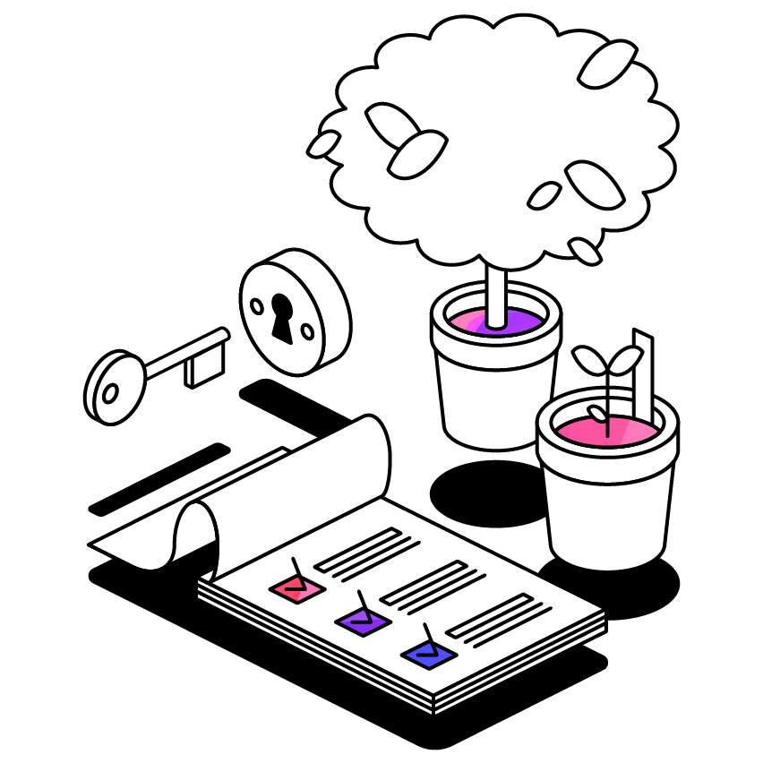

Your phone distracted you
0
times!
Checked My Phone
Musics for Studying
Listen to the following music tracks while working to enhance your focus:
Resources That Help with Focusing
A Soft Murmur
- Helps you focus by mixing ambient sounds.
Noisli
- Offers you various sound environments for focus, relaxation, or work.
Coffitivity
- Boosts productivity with café ambient sounds.
Focus@Will
- Enhances focus with scientifically designed music.
Brain.fm
- Increases concentration with music that affects brain waves.
Calmsound
- Offers you nature sounds and relaxing music.
